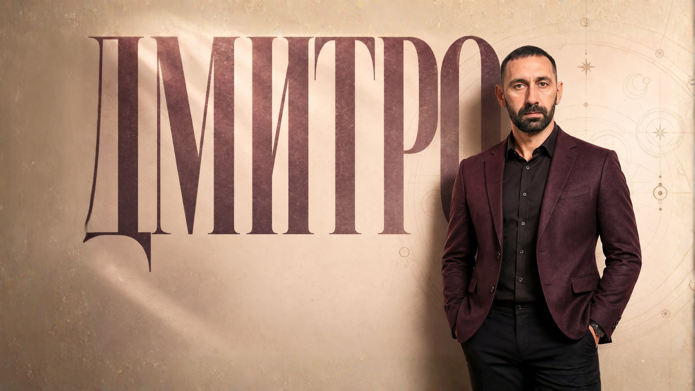
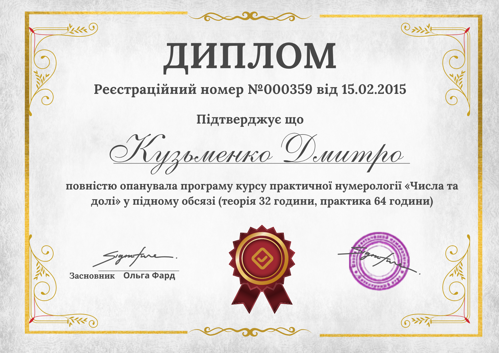
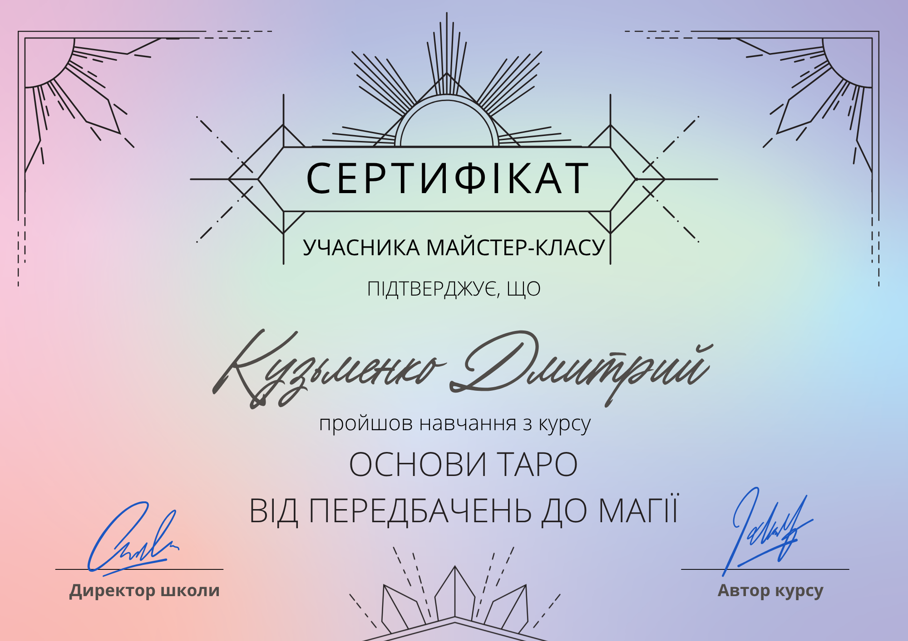

Ви пишете
Коротко опишіть ситуацію: що сталося, як давно немає спілкування, що вас турбує.
Дмитро допомагає розібратися у складних ситуаціях у стосунках — онлайн, конфіденційно, без тиску й порожніх обіцянок. Перший крок — написати й коротко описати ситуацію.
Важливо: умови першого контакту, вартість діагностики та формат відповіді потрібно підтвердити у Дмитра перед публікацією.

Коли варто звернутися
Якщо ви вже намагалися говорити, чекати або шукати поради, але ясності все одно немає, спочатку варто спокійно розібрати ситуацію.
Консультації доступні
з будь-якої країни
Перший принцип
Коротко опишіть ситуацію: що сталося, як давно немає спілкування, що вас турбує.
Дмитро дивиться ситуацію, ставить уточнювальні запитання й пояснює, що бачить.
Обговорюється підходящий формат: таро, діагностика зв'язку, індивідуальна робота або захист.
Якщо вирішуєте продовжити — узгоджуються умови, формат зв'язку та подальша робота.
Послуги
Розбір ситуації: що відбувається в парі, чому людина віддалилася, які причини можуть впливати.
ДетальнішеРозклад на почуття, наміри, причини конфлікту й можливі напрями розвитку ситуації.
ДетальнішеЯкщо немає спілкування, людина замовкла або пауза затягується — спочатку важливо зрозуміти причини.
ДетальнішеДля складних ситуацій, де звичайна розмова не допомагає. Після первинної діагностики.
ДетальнішеЯкщо є відчуття негативного впливу або повторюваних конфліктів — спочатку потрібна діагностика.
ДетальнішеІндивідуальна робота через месенджер або відеозв'язок — зручно з будь-якої країни.
ДетальнішеДовіра
У цій сфері багато людей, які продають страх і гучні обіцянки. Перед зверненням важливо дивитися не тільки на красиві слова, а й на підхід.
Про Дмитра


Відгуки
FAQ
Пишіть як є: що сталося, як давно і що зараз болить найбільше. Цього достатньо для старту.
Потрібно подивитися, чи живий зв’язок, чому людина мовчить і чи не зашкодить перший крок.
Якщо ви в паніці, краще спочатку зупинитися. Неправильне повідомлення іноді закриває двері сильніше.
Так, коли питання конкретне. Воно прибирає хаос і показує, де реальний ризик, а де страх.
Коли ситуація застрягла, розмова не працює, а зв’язок все ще болить і не відпускає.
Бо інша людина має свою волю. Чесна робота починається з діагностики, а не з красивої обіцянки.
Ні. Спочатку можна просто описати ситуацію. Якщо фото буде потрібне, Дмитро пояснить навіщо.
Після першого розбору вже видно, у який бік рухатися і чого краще не робити.
Так. Достатньо месенджера, короткого опису і зручного часу для відповіді.
На сторінці FAQ зібрані ширші відповіді про процес, оплату, Таро, стосунки і захист.